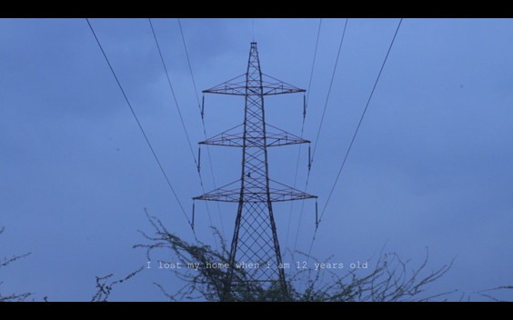
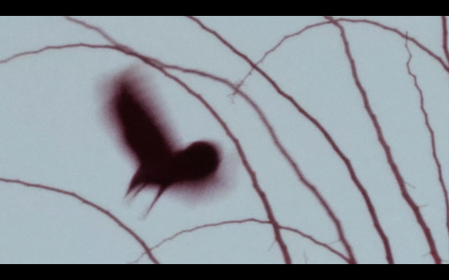
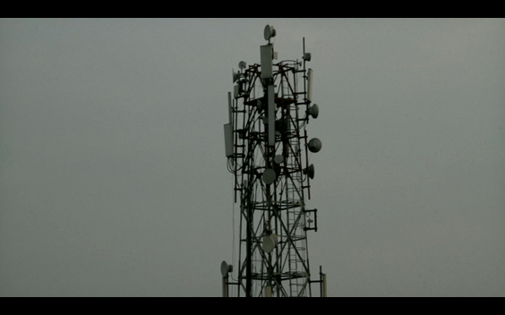
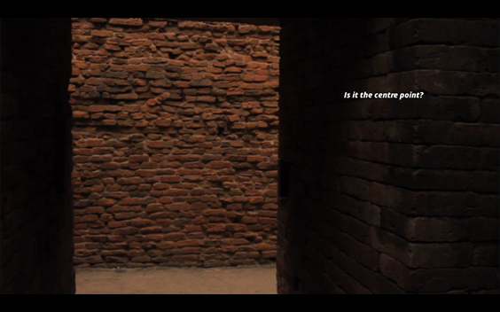
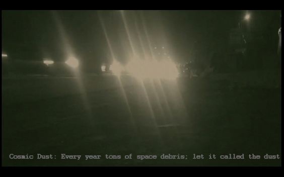

This page is the digital Home for the articles and Visual poetry. If you are interested about me visit Instagram or write to me ---> scroll to view ----> -----> this site is not yet mobile friendly---- Please view this site on computer---->scroll to view ----> -----> This site is under developement- Please ignore the errors for a while---> Scroll----
"A train to acclimatization" is a film of a family in constant flux looking for a house. A family of crows lived on a high-tension power distribution tower. The continuous corona effect and the high winds make the crows live in a harsh environment. A father dreamt to own a house. he says! Let it be in a difficult location. He is in constant search in pursue of a house after he had sold his house due to a financial crisis. The story narrates the father's dream and the crow's nest. "A train to acclimatization" 5:01 mins single channel Stereo sound 2019
Single-channel video [English] | 07min 02sec | silent | color | 16:9 | 2021 "A quiet evening" portrays glimpses of an evening from a rooftop. The air is filled with conversations through the radio waves and transport stories from one tower to another. An evening is a time of leisure for many, a time for conversation with loved ones, and a time to gossip with friends. The stories were muted in the end with the advent of the twilight.
"A quiet evening" portrays glimpses of an evening from a rooftop. The air is filled with conversations through the radio waves and transport stories from one tower to another. An evening is a time of leisure for many, a time for conversation with loved ones, and a time to gossip with friends. The stories were muted in the end with the advent of the twilight. 2019 / A Quiet Evening / HD / 3:72 mins
Single-channel video [English] 12min 12sec silent color 16:9 2021 {work in progress}  Nalanda is an ancient University and monastery located in India. It was the center point of the earliest students and its fame expanded into far regions of the world. the work is an establishment of questions to expand the origin of the zone and was expanding by its own thoughts of questions.
Single-channel video [English] 12min 12sec silent color 16:9 2021 {work in progress}  Melanin observers the light and shields the human skin from UV radiation. Human skin color is determined by the UV light exposure of the Sun rather than DNA. Every day tons of cosmic dust fall on the earth causing Sun rays to get refracted and scattered while passing through the dust. Delhi roads are filled with the microparticles of dust caused by the pollution and the lights do get scattered hence the rays get twice refracted. Cosmic Dust can't be the cause of one's suffocation 2019 / Single-channel Video / Silent / 1.40 mins